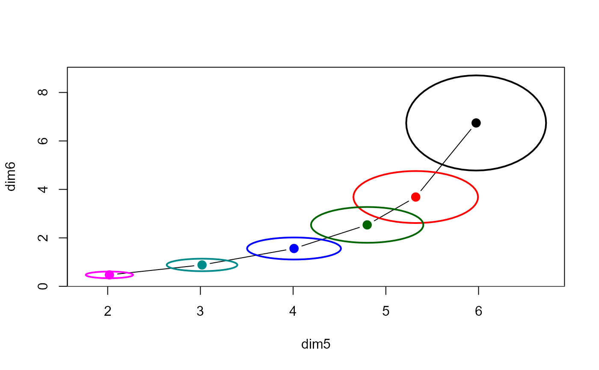

biplot.pcaridge supplements the standard display of the covariance
ellipsoids for a ridge regression problem in PCA/SVD space with labeled
arrows showing the contributions of the original variables to the dimensions
plotted.
Arguments
- x
A
pcaridgeobject computed bypca.ridgeor aridgeobject.- variables
The dimensions or variables to be shown in the the plot. By default, the last two dimensions, corresponding to the smallest singular values, are plotted for
class("pcaridge")objects or the first two variables forclass("ridge")objects.- labels
A vector of character strings or expressions used as labels for the ellipses. Use
labels=NULLto suppress these.- asp
Aspect ratio for the plot. The default value,
asp=1helps ensure that lengths and angles are preserved in these plots. Useasp=NAto override this.- origin
The origin for the variable vectors in this plot, a vector of length 2. If not specified, the function calculates an origin to make the variable vectors approximately centered in the plot window.
- scale
The scale factor for variable vectors in this plot. If not specified, the function calculates a scale factor to make the variable vectors approximately fill the plot window.
- var.lab
Labels for variable vectors. The default is the names of the predictor variables.
- var.lwd, var.col, var.cex
Line width, color and character size used to draw and label the arrows representing the variables in this plot.
- xlab, ylab
Labels for the plot dimensions. If not specified,
prefixandsuffixare used to construct informative dimension labels.- prefix
Prefix for labels of the plot dimensions.
- suffix
Suffix for labels of the plot dimensions. If
suffix=TRUEthe percent of variance accounted for by each dimension is added to the axis label.- ...
Other arguments, passed to
plot.pcaridge
Details
The biplot view showing the dimensions corresponding to the two smallest singular values is particularly useful for understanding how the predictors contribute to shrinkage in ridge regression.
This is only a biplot in the loose sense that results are shown in two spaces simultaneously -- the transformed PCA/SVD space of the original predictors, and vectors representing the predictors projected into this space.
biplot.ridge is a similar extension of plot.ridge,
adding vectors showing the relation of the PCA/SVD dimensions to the plotted
variables.
class("ridge") objects use the transpose of the right singular
vectors, t(x$svd.V) for the dimension weights plotted as vectors.
References
Friendly, M. (2013). The Generalized Ridge Trace Plot: Visualizing Bias and Precision. Journal of Computational and Graphical Statistics, 22(1), 50-68, doi:10.1080/10618600.2012.681237 , https://datavis.ca/papers/genridge-jcgs.pdf
Examples
longley.y <- longley[, "Employed"]
longley.X <- data.matrix(longley[, c(2:6,1)])
lambda <- c(0, 0.005, 0.01, 0.02, 0.04, 0.08)
lridge <- ridge(longley.y, longley.X, lambda=lambda)
plridge <- pca(lridge)
plot(plridge, radius=0.5)

# same, with variable vectors
biplot(plridge, radius=0.5)
#> Vector scale factor set to 5.246566
# add some other options
biplot(plridge, radius=0.5, var.col="brown", var.lwd=2, var.cex=1.2, prefix="Dimension ")
#> Vector scale factor set to 5.246566
# biplots for ridge objects, showing PCA vectors
plot(lridge, radius=0.5)
biplot(lridge, radius=0.5)
#> Vector scale factor set to 3.930689
biplot(lridge, radius=0.5, asp=NA)
#> Vector scale factor set to 0.7240638